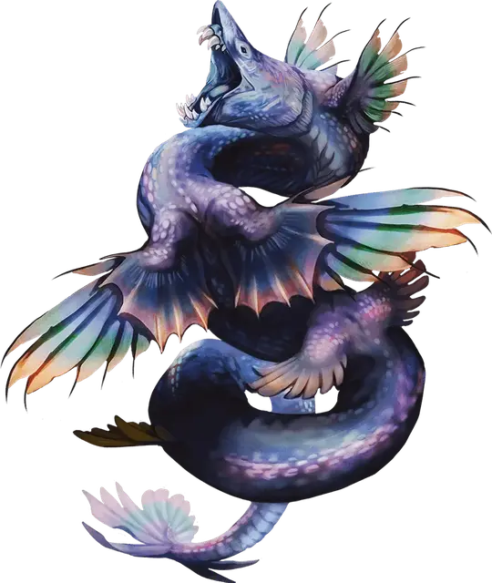

Бакунава
Bakunawa
Громадный Дракон, обычно нейтральный

Класс Доспеха 15 (природный доспех)
Хиты 150 (12к20 + 24)
Скорость 20 футов, плавая 60 футов, летая 60 футов
| мод | спас | ||
|---|---|---|---|
| СИЛ | 21 | +5 | +5 |
| ЛОВ | 12 | +1 | +5 |
| ТЕЛ | 15 | +2 | +6 |
| мод | спас | ||
|---|---|---|---|
| ИНТ | 14 | +2 | +2 |
| МДР | 17 | +3 | +7 |
| ХАР | 16 | +3 | +3 |
Сопротивление урону звук, электричество
Чувства слепое зрение 60 футов, тёмное зрение 120 футов, пассивное Восприятие 21
Языки Общий, Драконий, Небесный
Опасность 12 (8400 опыта)
Бонус мастерства +4
Особенности
Амфибия. Бакунава может дышать и воздухом и под водой.
Легендарное сопротивление (3/день). Если Бакунава проваливает спасбросок, он может вместо этого сделать спасбросок успешным.
Действия
Мультиатака. Бакунава совершает одну атаку Укусом и одну атаку Штормовым ударом.
Укус. . Рукопашная атака оружием: +9 к попаданию, досягаемость 10 футов, одна цель. Попадание: 12 (2к6 + 5) колющего урона плюс 7 (2к6) урона электричеством. Если целью является существо Большого размера или меньше, оно должно преуспеть в спасброске Силы Сл 17, иначе будет проглочено бакунавой. Будучи проглоченным, существо ослеплено и опутано, и обладает полным укрытием от атак и прочих эффектов, исходящих снаружи бакунавы, и получает 10 (3к6) урона электричеством в начале каждого хода бакунавы.
Пищевод бакунавы может вместить до двух существ одновременно. Если бакунава получает 30 или более урона за один ход от проглоченного существа, бакунава должен совершить спасбросок Телосложения Сл 16 в конце этого хода или отрыгнёт всех проглоченных существ, которые падают ничком в пространстве в пределах 15 футов от бакунавы. Если бакунава умирает, проглоченное существо перестает быть опутанным им, и может высвободиться из трупа, потратив 15 футов перемещения, падая при выходе ничком.
Штормовой удар. . Рукопашная атака оружием: +9 к попаданию, досягаемость 10 футов, одна цель. Попадание: 9 (1к8 + 5) дробящего урона плюс 5 (1к10) урона звуком и цель отбрасывается на 10 футов в горизонтальном направлении от бакунавы.
Легендарные действия
Бакунава может совершать 3 легендарных действия, выбирая из указанных ниже вариантов. Лишь одно легендарное действие может быть совершено за раз, и только в конце хода другого существа. Бакунава восстанавливает истраченные действия в начале своего хода.
Ловкое скольжение. Бакунава летит или плывёт на половине своей скорости. Это перемещение не провоцирует атак.
Удар. Бакунава совершает одну атаку Штормовым ударом.
Удары молнии (стоит 3 действия). Бакунава выстреливает молниями в двух существ, которых он может видеть в пределах 60 футов от себя. Каждая цель должна преуспеть в спасброске Ловкости Сл 15, иначе получит 22 (4к10) урона электричеством.
Описание
Почитаемые как драконьи аватары шторма и прилива, бакунавы парят над архипелагами, которые они называют домом. Радужная чешуя, потрескивающая от молний, покрывает устрашающее змеевидное тело бакунавы, а стремительные движения его могучих крыльев отдаются эхом в грозовых ветрах. Известные своей беспощадностью в бою, бакунавы проглатывают любого, кто бросает им вызов.